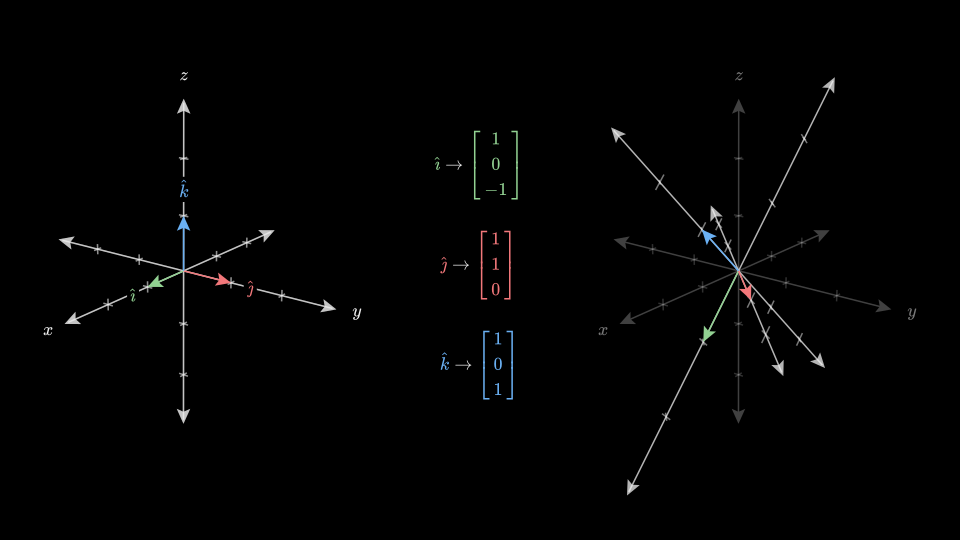

প্রচলিত পাঠ্যক্রমে ডট প্রোডাক্ট সাধারণত লিনিয়ার অ্যালজেব্রার একেবারে শুরুতেই শেখানো হয়, তাই এই সিরিজে এটি এত পরে আসা কিছুটা অদ্ভুত লাগতে পারে। এর কারণ হলো—ডট প্রোডাক্টের ভূমিকা সম্পর্কে গভীর বোঝাপড়া কেবল রৈখিক রূপান্তরের আলোতেই অর্জন করা যায়। প্রথমে আমরা সংখ্যাতাত্ত্বিক পদ্ধতিটি সংক্ষেপে দেখে নেব, যা বেশিরভাগ পাঠকের কাছে পুনরাবৃত্তি মাত্র।
সংখ্যাতাত্ত্বিক পদ্ধতি (Numerical Method)
সংখ্যাতাত্ত্বিকভাবে একই মাত্রার দুটি ভেক্টরের ডট প্রোডাক্ট নিতে হলে তাদের অনুরূপ স্থানাঙ্কগুলোকে জোড়ায় জোড়ায় গুণ করে সবগুলোর যোগফল বের করতে হয়। দুই মাত্রার ক্ষেত্রে উদাহরণ হলো $\begin{bmatrix}1\\2\end{bmatrix}\cdot\begin{bmatrix}3\\4\end{bmatrix}=1\cdot3+2\cdot4=11$। চার মাত্রার ক্ষেত্রে একই নিয়মে $\begin{bmatrix}6\\2\\8\\3\end{bmatrix}\cdot\begin{bmatrix}1\\8\\5\\3\end{bmatrix}=6\cdot1+2\cdot8+8\cdot5+3\cdot3=71$ পাওয়া যায়।
শিক্ষার্থী বন্ধুরা, লিনিয়ার বীজগণিতে ভেক্টর নিয়ে কাজ করার সময় আমরা প্রায়শই দুটি ভেক্টরের গুণন বা ডট প্রোডাক্টের মুখোমুখি হই। সাধারণ পাঠ্যবইগুলোতে ডট প্রোডাক্ট শেখানো হয় স্থানাঙ্ক গুণনের একটি যান্ত্রিক সূত্র দিয়ে—প্রথম ভেক্টরের এক্স উপাংশের সাথে দ্বিতীয় ভেক্টরের এক্স উপাংশের গুণ, এবং ওয়াই উপাংশের সাথে ওয়াই উপাংশের গুণ করে যোগফল। $\vec{v}\cdot\vec{w}=v_x w_x+v_y w_y$।
কিন্তু এই সূত্রের পেছনের আসল জ্যামিতিক দৃশ্যটি কী? জ্যামিতিকভাবে ডট প্রোডাক্ট বলতে বোঝায় প্রক্ষেপণ বা প্রোজেকশন। স্ক্রিনের দিকে লক্ষ্য করুন: ধরা যাক আমাদের সামনে দুটি ভেক্টর রয়েছে—ভি এবং ডব্লিউ।
দিকবিন্যাস ও চিহ্নের অর্থ
এই গুণফলের চিহ্ন কিন্তু অত্যন্ত গুরুত্বপূর্ণ। যদি প্রক্ষেপণটি ভেক্টর ভি এর মূল অভিমুখের দিকেই নির্দেশ করে, তবে ডট প্রোডাক্ট হবে একটি ধনাত্মক সংখ্যা। এর অর্থ ভেক্টর দুটি মোটামুটি একই দিকে মুখ করে আছে এবং তাদের মধ্যবর্তী কোণ নব্বই ডিগ্রির চেয়ে কম: $\theta < 90^\circ \implies \vec{v}\cdot\vec{w} > 0$।
যদি ভেক্টর দুটি পরস্পরের সাথে ঠিক সমকোণে থাকে, অর্থাৎ লম্ব বা অর্থোগোনাল হয়, তবে ডব্লিউ এর শীর্ষ থেকে লম্ব টানলে তা সরাসরি মূলবিন্দুতেই পতিত হয়! ফলে প্রক্ষেপণের দৈর্ঘ্য হয় শূন্য, এবং তাদের ডট প্রোডাক্টও হয়ে যায় ঠিক শূন্য: $\theta=90^\circ\iff\vec{v}\cdot\vec{w}=0$।
আর যদি ভেক্টর দুটির অভিমুখ বিপরীতমুখী হয়, অর্থাৎ মধ্যবর্তী কোণ নব্বই ডিগ্রির চেয়ে বেশি হয়, তবে প্রক্ষেপণটি ভি এর পেছনের দিকে প্রসারিত হবে। আর তখন ডট প্রোডাক্টের মান দাঁড়াবে একটি ঋণাত্মক সংখ্যা: $\theta > 90^\circ \implies \vec{v}\cdot\vec{w} < 0$।
ডট প্রোডাক্টের এই জ্যামিতিক ব্যাখ্যার দিকে তাকালে প্রথমে একটি রহস্য মনে খটকা তৈরি করে। বীজগণিতে আমরা জানি ভি ডট ডব্লিউ আর ডব্লিউ ডট ভি সম্পূর্ণ একই কথা—ডট প্রোডাক্ট সম্পূর্ণ প্রতিসম বা সিমেট্রিক: $\vec{v}\cdot\vec{w}=\vec{w}\cdot\vec{v}$। কিন্তু জ্যামিতিকভাবে এটা কি আদৌ স্পষ্ট?
এর চমৎকার জ্যামিতিক প্রমাণটি দেখুন: প্রথমে ধরে নিন দুটি ভেক্টরই সমান দৈর্ঘ্যের একক ভেক্টর। এবার তাদের মাঝখান দিয়ে একটি দ্বিখণ্ডক প্রতিসাম্য রেখা কল্পনা করুন। এই কর্ণের সাপেক্ষে সমতলটিকে উল্টে দিলে ভেক্টর দুটি নিজেদের স্থান অদলবদল করে। ফলে একটির ওপর অপরটির প্রক্ষেপণ হুবহু সমান হতে বাধ্য—$\|\hat{u}\|=\|\hat{w}\|=1 \implies \text{proj}_{\hat{u}}\hat{w}=\text{proj}_{\hat{w}}\hat{u}$।
এখন যদি আমরা একটি ভেক্টরকে দ্বিগুণ লম্বা করি, তবে তার নিজস্ব দৈর্ঘ্য দ্বিগুণ হওয়ার কারণে প্রথম গণনায় গুণফল দ্বিগুণ হবে; আবার সদৃশ ত্রিভুজের নিয়মে অপর ভেক্টরের ওপর তার প্রক্ষেপণের দৈর্ঘ্যও ঠিক দ্বিগুণ প্রসারিত হবে! উভয় ক্ষেত্রেই গুণফল একই হারে স্কেল হয়: $(s\vec{v})\cdot\vec{w}=s(\vec{v}\cdot\vec{w})=\vec{v}\cdot(s\vec{w})$।
মৌলিক ধাঁধা: প্রক্ষেপণের সাথে স্থানাঙ্ক গুণনের সম্পর্ক কোথায়?
কিন্তু এখানে সবচেয়ে গভীর ও বিস্ময়কর প্রশ্নটি রয়ে গেছে: ভেক্টরের শীর্ষ থেকে লম্বালম্বি প্রক্ষেপণ টানার মতো খাঁটি জ্যামিতিক ধারণার সাথে স্থানাঙ্ক ধরে ধরে গুণ করার এই শুষ্ক বীজগাণিতিক সূত্রের কী সম্পর্ক থাকতে পারে? $v_x w_x+v_y w_y\overset{?}{=}\|\vec{v}\|\|\vec{w}\|\cos\theta$।
অধিকাংশ পাঠ্যবই একে কোসাইন সূত্র দিয়ে প্রমাণ করে দেয়, কিন্তু তাতে এর অভ্যন্তরীণ রূপটি বোঝা যায় না। এই রহস্যের পর্দা উন্মোচন করতে হলে আমাদের ফিরে তাকাতে হবে রৈখিক রূপান্তরের দিকে—বিশেষ করে দ্বিমাত্রিক স্থান থেকে একমাত্রিক সংখ্যা রেখায় রূপান্তরের দিকে!
পূর্ববর্তী অধ্যায়ে আমরা অসম আকারের ম্যাট্রিক্স নিয়ে কথা বলেছি। এখন কল্পনা করুন এমন একটি রূপান্তর, যা দ্বিমাত্রিক টুডি সমতলের যেকোনো ভেক্টর গ্রহণ করে এবং আউটপুট হিসেবে একটি একক বাস্তব সংখ্যা—অর্থাৎ একমাত্রিক সংখ্যা রেখার একটি বিন্দু প্রদান করে: $T:\mathbb{R}^2\to\mathbb{R}^1$।
লিনিয়ার রূপান্তরের মূল চালিকাশক্তি মনে করুন: যেকোনো রূপান্তর সম্পূর্ণভাবে নির্ধারিত হয় ভিত্তি ভেক্টরগুলো কোথায় গিয়ে পৌঁছায় তার ওপর। এখানে ভিত্তি ভেক্টর আই হ্যাট রূপান্তরিত হয়ে সংখ্যা রেখার একটি সংখ্যা ইউ এক্স এ পরিণত হয়, এবং জে হ্যাট রূপান্তরিত হয়ে পৌঁছায় অপর একটি সংখ্যা ইউ ওয়াই এ—$T(\hat{i})=u_x\in\mathbb{R},\;T(\hat{j})=u_y\in\mathbb{R}$।
এখন সমতলের যেকোনো ভেক্টর এক্স ওয়াই এর ওপর এই রূপান্তর প্রয়োগ করলে আমরা পাই: ইউ এক্স গুণ এক্স যোগ ইউ ওয়াই গুণ ওয়াই! লক্ষ্য করুন: একটি এক বাই দুই ম্যাট্রিক্সকে একটি সাধারণ কলাম ভেক্টরকে শুইয়ে দেওয়ার মতো দেখতে লাগে, আর ম্যাট্রিক্স গুণনের ফলাফলটি হুবহু ডট প্রোডাক্টের সূত্রের রূপ ধারণ করে—$\begin{bmatrix}u_x&u_y\end{bmatrix}\begin{bmatrix}x\\y\end{bmatrix}=u_x x+u_y y$।



এখন আমাদের দুটি পৃথক জগত একত্রিত হতে যাচ্ছে। মূলবিন্দুগামী একটি তির্যক সরলরেখা কল্পনা করুন যার ওপর একটি একক ভেক্টর ইউ হ্যাট অবস্থান করছে। এই রেখাটিকে আমরা আমাদের একমাত্রিক সংখ্যা রেখা হিসেবে বিবেচনা করতে পারি—$\hat{u}=\begin{bmatrix}u_x\\u_y\end{bmatrix},\;\|\hat{u}\|=1$।
সমতলের প্রতিটি বিন্দুকে যদি আমরা লম্বালম্বিভাবে এই তির্যক রেখাটির ওপর প্রক্ষেপ করি, তবে এটি কি একটি লিনিয়ার রূপান্তর? উত্তর হলো: অবশ্যই! সমদূরবর্তী যেকোনো বিন্দু প্রক্ষেপণের পরও সংখ্যা রেখায় নিখুঁত সমদূরত্ব বজায় রাখে—$P_{\hat{u}}:\mathbb{R}^2\to\mathbb{R}^1$।
আই হ্যাটকে ইউ হ্যাট রেখার ওপর প্রক্ষেপ করলে তার মান কত হবে? প্রতিসাম্যের কারণে আই হ্যাটের ওপর ইউ হ্যাটের প্রক্ষেপণ আর ইউ হ্যাটের ওপর আই হ্যাটের প্রক্ষেপণ হুবহু সমান! আর এক্স অক্ষের ওপর ইউ হ্যাটের ছায়া হলো ইউ হ্যাটের নিজস্ব এক্স স্থানাঙ্ক ইউ এক্স। একইভাবে জে হ্যাটের প্রক্ষেপণ হলো ইউ ওয়াই—$P(\hat{i})=u_x,\;P(\hat{j})=u_y\implies M_{\text{proj}}=\begin{bmatrix}u_x&u_y\end{bmatrix}$।
যদি ভেক্টরটি একক ভেক্টর না হয়ে যেকোনো ভেক্টর ভি হয় যার দৈর্ঘ্য এস গুণ বেশি, তবে প্রক্ষেপণের পরিমাপও ঠিক এস গুণ স্কেল হবে। আর এভাবেই জ্যামিতিক প্রক্ষেপণ এবং স্থানাঙ্ক ভিত্তিক বীজগাণিতিক গুণন এক অটুট বন্ধনে আবদ্ধ হয়—$\vec{v}\cdot\vec{w}=\begin{bmatrix}v_x&v_y\end{bmatrix}\begin{bmatrix}w_x\\w_y\end{bmatrix}=v_x w_x+v_y w_y$।
একটি একক ভেক্টর $\hat{u}$-এর ওপর প্রক্ষেপণ আসলে একটি রৈখিক রূপান্তর, তাই এর একটি ১×২ ম্যাট্রিক্স রূপ আছে। প্রতিসাম্যের সাহায্যে দেখা গেল $\hat{i}$-এর প্রক্ষেপণ হলো $u_x$ এবং $\hat{j}$-এর প্রক্ষেপণ হলো $u_y$; ফলে প্রক্ষেপণ ম্যাট্রিক্সটি হলো $\begin{bmatrix}u_x&u_y\end{bmatrix}$—অর্থাৎ ইউ হ্যাটের নিজস্ব স্থানাঙ্কের ট্রান্সপোজ!
সংক্ষেপে বললে, ডট প্রোডাক্ট একটি অত্যন্ত কার্যকর জ্যামিতিক হাতিয়ার—এটি প্রক্ষেপণ বোঝায় এবং ভেক্টর দুটি কতটা একই দিকে মুখ করে আছে তা যাচাই করে। এটি সম্ভবত ডট প্রোডাক্ট সম্পর্কে সবচেয়ে গুরুত্বপূর্ণ কথা। কিন্তু আরও গভীর স্তরে, দুটি ভেক্টরকে ডট করা মানে তাদের একটি ভেক্টরকে রূপান্তরের জগতে অনুবাদ করা।
সংখ্যাতাত্ত্বিকভাবে এটি হয়তো তুচ্ছ মনে হতে পারে—দুটি হিসাব যা দেখতে একই রকম। কিন্তু গণিতে যখন আপনি কোনো ভেক্টরের সাথে পরিচিত হন, তখন কখনো কখনো বোঝা যায় যে তীরের বদলে একে একটি রৈখিক রূপান্তরের ভৌত রূপ হিসেবে বোঝাই সহজ—বহুচলক ক্যালকুলাসের গ্রেডিয়েন্ট ভেক্টরটি এখানে মনে পড়ে। ভেক্টর যেন একটি রূপান্তরের ধারণাগত সংক্ষেপ মাত্র, কারণ শূন্যে স্থানকে সংকুচিত করে এমন রূপান্তরের চেয়ে মহাশূন্যের তীরচিহ্ন ভাবা অনেক সহজ।
পরবর্তী অধ্যায়ে আপনারা ডুয়ালিটির আরও একটি চমৎকার উদাহরণ দেখবেন—ক্রস প্রোডাক্ট। সেখানে দেখা যাবে কীভাবে একটি ভেক্টর আবার রূপান্তর হিসেবে আবির্ভূত হয়। ক্রস প্রোডাক্ট →
নিচের সমতলে লাল বিন্দুটি টেনে ভেক্টর $\vec{v}$ বদলান এবং স্লাইডার দিয়ে তাকে স্কেল করুন; দেখুন কীভাবে স্থানাঙ্ক বদলালেও প্রক্ষেপণের দৈর্ঘ্য ও ভেক্টরের দিকের গুণফল হিসেবে ডট প্রোডাক্ট একই নিয়ম মেনে চলে। ইউনিট ভেক্টর $\hat{u}$ এর দিক বরাবর প্রক্ষেপণ নিলে মানটি হয় $\hat{u}\cdot\vec{v}$, আর $\hat{u}$-কে তিন গুণ করলে মানও তিন গুণ হয়। পূর্ণস্ক্রিন বাটনে চাপ দিয়ে ল্যাবটি বড় করে দেখতে পারেন।